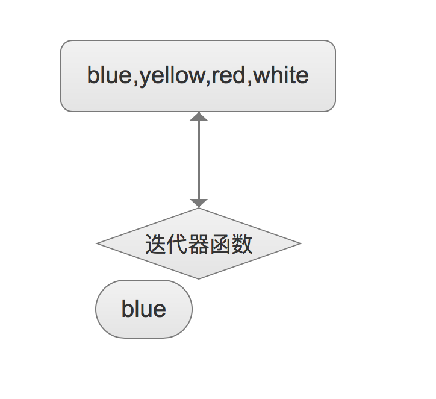
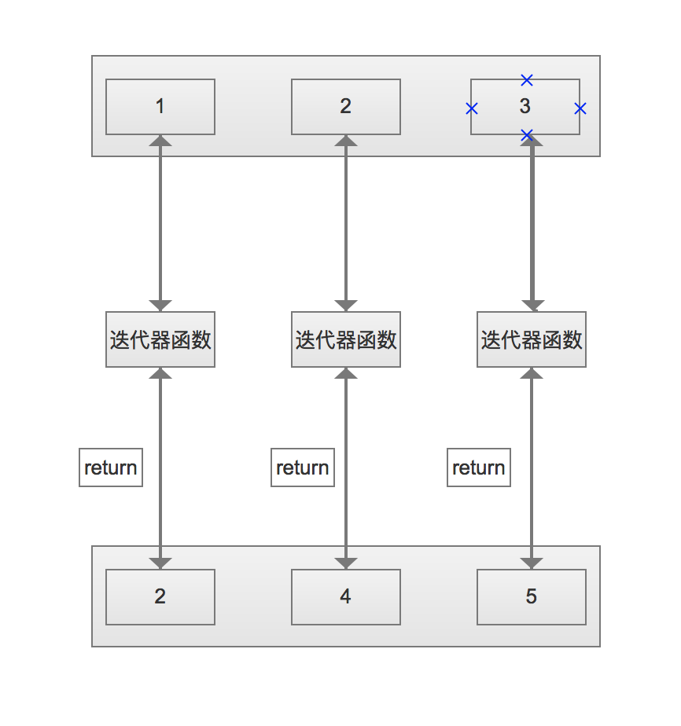
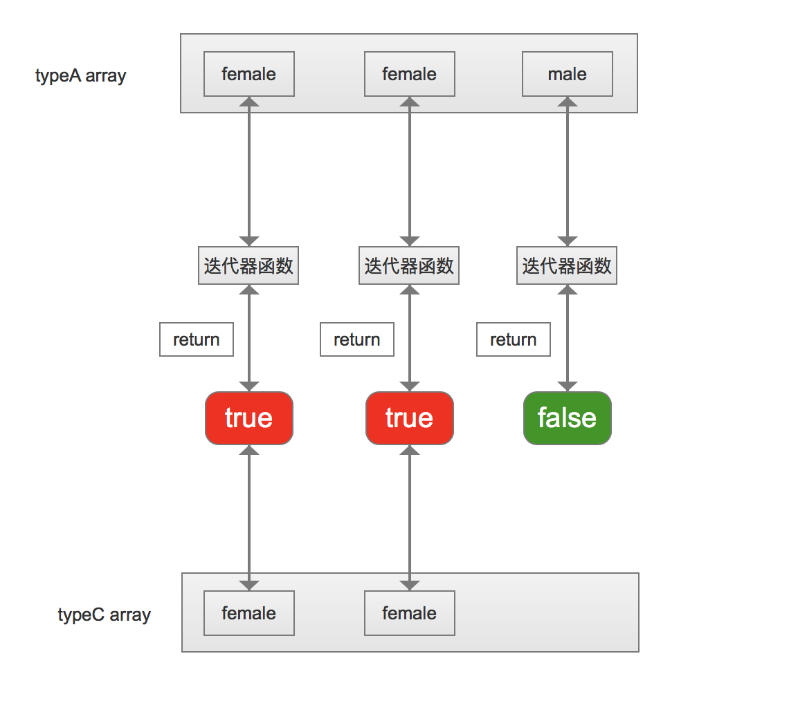
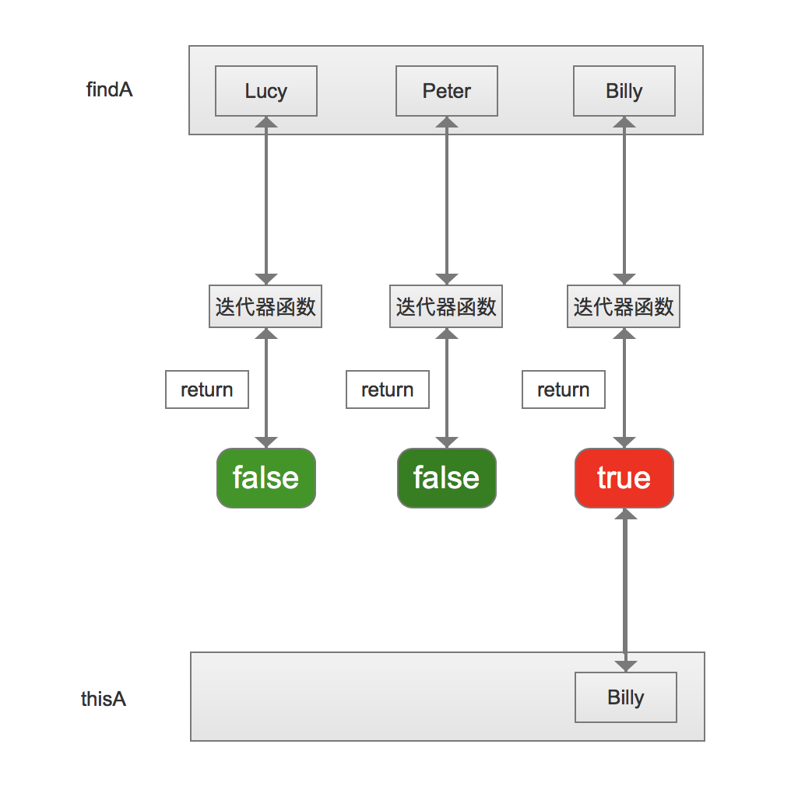
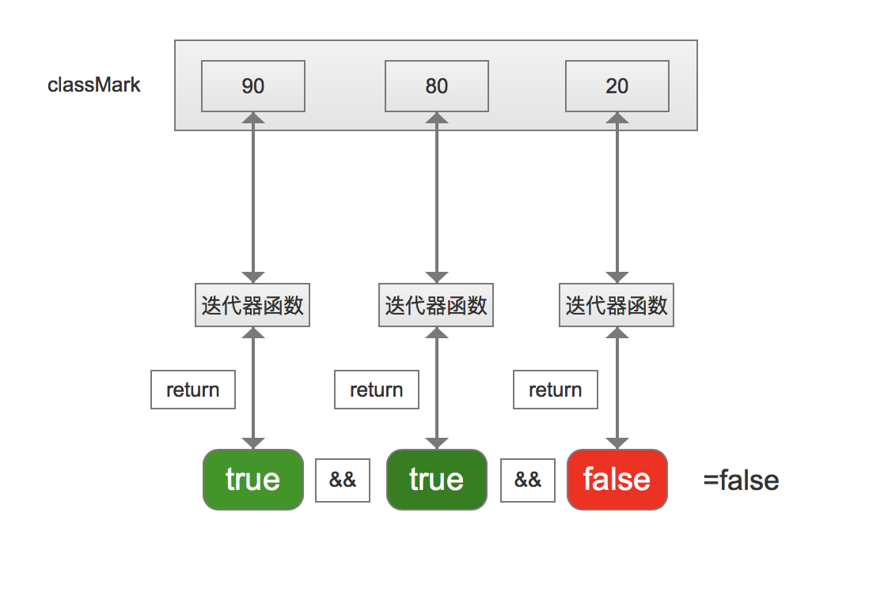
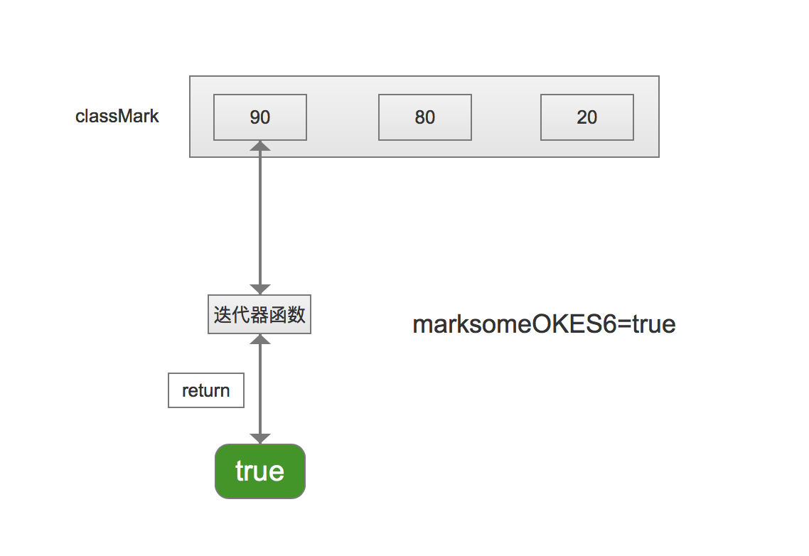
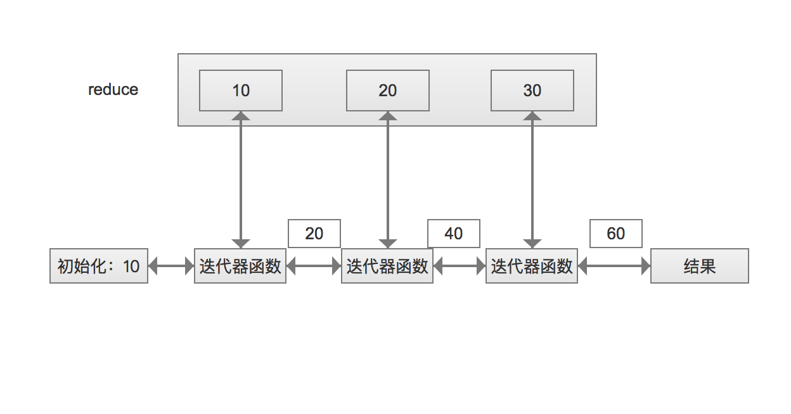

<!DOCTYPE html>
<html>
<head><meta name="generator" content="Hexo 3.8.0">
  <meta charset="utf-8">
  
  <title>天花乱坠的数组方法(一) | guowj</title>
  <meta name="viewport" content="width=device-width, initial-scale=1, maximum-scale=1">
  
  <meta name="keywords" content="ES6数组">
  
  
  
  
  <meta name="description" content="&amp;nbsp;&amp;nbsp;&amp;nbsp;&amp;nbsp;&amp;nbsp;&amp;nbsp;数组是 JS 当中很重要的一个部分，它有很多很多很多的方法，对于我这样记性不好的人来说，一些不常用的方法经常会被遗忘，经常需要再次查找才能想起来。今天为了能给自己加深对数组方法的记忆，将通过两个章节去整理下常用的数组方法。第一个章节将记录下 ES6 中常见的数组方法，其中将详细记录下部分数组，第二个章节将简单整理下 ES5">
<meta name="keywords" content="ES6,数组">
<meta property="og:type" content="article">
<meta property="og:title" content="天花乱坠的数组方法(一)">
<meta property="og:url" content="https://gwjacqueline.github.io/天花乱坠的数组方法(一)/index.html">
<meta property="og:site_name" content="guowj">
<meta property="og:description" content="&amp;nbsp;&amp;nbsp;&amp;nbsp;&amp;nbsp;&amp;nbsp;&amp;nbsp;数组是 JS 当中很重要的一个部分，它有很多很多很多的方法，对于我这样记性不好的人来说，一些不常用的方法经常会被遗忘，经常需要再次查找才能想起来。今天为了能给自己加深对数组方法的记忆，将通过两个章节去整理下常用的数组方法。第一个章节将记录下 ES6 中常见的数组方法，其中将详细记录下部分数组，第二个章节将简单整理下 ES5">
<meta property="og:locale" content="zh-CN">
<meta property="og:image" content="https://gwjacqueline.github.io/images/forEachFlow.png">
<meta property="og:image" content="https://gwjacqueline.github.io/images/mapFlow.png">
<meta property="og:image" content="https://gwjacqueline.github.io/images/filterFlow.png">
<meta property="og:image" content="https://gwjacqueline.github.io/images/findFlow.png">
<meta property="og:image" content="https://gwjacqueline.github.io/images/everyFlow.png">
<meta property="og:image" content="https://gwjacqueline.github.io/images/someFlow.png">
<meta property="og:image" content="https://gwjacqueline.github.io/images/reduceFlow.png">
<meta property="og:updated_time" content="2019-04-12T01:43:38.000Z">
<meta name="twitter:card" content="summary">
<meta name="twitter:title" content="天花乱坠的数组方法(一)">
<meta name="twitter:description" content="&amp;nbsp;&amp;nbsp;&amp;nbsp;&amp;nbsp;&amp;nbsp;&amp;nbsp;数组是 JS 当中很重要的一个部分，它有很多很多很多的方法，对于我这样记性不好的人来说，一些不常用的方法经常会被遗忘，经常需要再次查找才能想起来。今天为了能给自己加深对数组方法的记忆，将通过两个章节去整理下常用的数组方法。第一个章节将记录下 ES6 中常见的数组方法，其中将详细记录下部分数组，第二个章节将简单整理下 ES5">
<meta name="twitter:image" content="https://gwjacqueline.github.io/images/forEachFlow.png">
  
    <link rel="alternate" href="/atom.xml" title="guowj" type="application/atom+xml">
  

  

  <link rel="icon" href="/css/images/mylogo.png">
  <link rel="apple-touch-icon" href="/css/images/mylogo.png">
  
    <link href="//fonts.googleapis.com/css?family=Source+Code+Pro" rel="stylesheet" type="text/css">
  
  <link href="https://fonts.googleapis.com/css?family=Open+Sans|Montserrat:700" rel="stylesheet" type="text/css">
  <link href="https://fonts.googleapis.com/css?family=Roboto:400,300,300italic,400italic" rel="stylesheet" type="text/css">
  <link href="//netdna.bootstrapcdn.com/font-awesome/4.0.3/css/font-awesome.css" rel="stylesheet">
  <style type="text/css">
    @font-face{font-family:futura-pt; src:url("../css/fonts/FuturaPTBold.otf") format("woff");font-weight:500;font-style:normal;}
    @font-face{font-family:futura-pt-light; src:url("../css/fonts/FuturaPTBook.otf") format("woff");font-weight:lighter;font-style:normal;}
    @font-face{font-family:futura-pt-italic; src:url("../css/fonts/FuturaPTBookOblique.otf") format("woff");font-weight:400;font-style:italic;}
}

  </style>
  <link rel="stylesheet" href="/css/style.css">

  <script src="/js/jquery-3.1.1.min.js"></script>
  <script src="/js/bootstrap.js"></script>

  <!-- Bootstrap core CSS -->
  <link rel="stylesheet" href="/css/bootstrap.css">

  
    <link rel="stylesheet" href="/css/dialog.css">
  

  

  
    <link rel="stylesheet" href="/css/header-post.css">
  

  
  
  
    <link rel="stylesheet" href="/css/vdonate.css">
  

</head>
</html>


  <body data-spy="scroll" data-target="#toc" data-offset="50">


  
  <div id="container">
    <div id="wrap">
      
        <header>

    <div id="allheader" class="navbar navbar-default navbar-static-top" role="navigation">
        <div class="navbar-inner">
          
          <div class="container"> 
            <button type="button" class="navbar-toggle" data-toggle="collapse" data-target=".navbar-collapse">
              <span class="sr-only">Toggle navigation</span>
              <span class="icon-bar"></span>
              <span class="icon-bar"></span>
              <span class="icon-bar"></span>
            </button>

            
              <a class="brand" style="
                 margin-top: 0px;" href="#" data-toggle="modal" data-target="#myModal">
                  
              </a>
            
            
            <div class="navbar-collapse collapse">
              <ul class="hnav navbar-nav">
                
                  <li> <a class="main-nav-link" href="/">首页</a> </li>
                
                  <li> <a class="main-nav-link" href="/archives">归档</a> </li>
                
                  <li> <a class="main-nav-link" href="/categories">分类</a> </li>
                
                  <li> <a class="main-nav-link" href="/tags">标签</a> </li>
                
                  <li> <a class="main-nav-link" href="/about">关于</a> </li>
                
                  <li><div id="search-form-wrap">

    <form class="search-form">
        <input type="text" class="ins-search-input search-form-input" placeholder>
        <button type="submit" class="search-form-submit"></button>
    </form>
    <div class="ins-search">
    <div class="ins-search-mask"></div>
    <div class="ins-search-container">
        <div class="ins-input-wrapper">
            <input type="text" class="ins-search-input" placeholder="请输入关键词...">
            <span class="ins-close ins-selectable"><i class="fa fa-times-circle"></i></span>
        </div>
        <div class="ins-section-wrapper">
            <div class="ins-section-container"></div>
        </div>
    </div>
</div>
<script>
(function (window) {
    var INSIGHT_CONFIG = {
        TRANSLATION: {
            POSTS: '文章',
            PAGES: '页面',
            CATEGORIES: '分类',
            TAGS: '标签',
            UNTITLED: '(无标题)',
        },
        ROOT_URL: '/',
        CONTENT_URL: '/content.json',
    };
    window.INSIGHT_CONFIG = INSIGHT_CONFIG;
})(window);
</script>
<script src="/js/insight.js"></script>

</div></li>
            </ul></div>
          </div>
                
      </div>
    </div>

</header>


      
            
      <div id="content" class="outer">
        
          <section id="main" style="float:none;"><article id="post-天花乱坠的数组方法(一)" style="width: 75%; float:left;" class="article article-type-post" itemscope itemprop="blogPost">
  <div id="articleInner" class="article-inner">
    
    
      <header class="article-header">
        
  
    <h1 class="thumb" itemprop="name">
      天花乱坠的数组方法(一)
    </h1>
  

      </header>
    
    <div class="article-meta">
      
	<a href="/天花乱坠的数组方法(一)/" class="article-date">
	  <time datetime="2019-04-06T09:52:39.000Z" itemprop="datePublished">2019-04-06</time>
	</a>

      
    <a class="article-category-link" href="/categories/js/">js</a>

      
	<a class="article-views">
	<span id="busuanzi_container_page_pv">
		阅读量<span id="busuanzi_value_page_pv"></span>
	</span>
	</a>

      

    </div>
    <div class="article-entry" itemprop="articleBody">
      
        <blockquote>
<p>&nbsp;&nbsp;&nbsp;&nbsp;&nbsp;&nbsp;数组是 JS 当中很重要的一个部分，它有很多很多很多的方法，对于我这样记性不好的人来说，一些不常用的方法经常会被遗忘，经常需要再次查找才能想起来。今天为了能给自己加深对数组方法的记忆，将通过两个章节去整理下常用的数组方法。第一个章节将记录下 ES6 中常见的数组方法，其中将详细记录下部分数组，第二个章节将简单整理下 ES5 之前的数组方法。</p>
</blockquote>
<a id="more"></a>
<h2 id="ES6-中新增的数组方法"><a href="#ES6-中新增的数组方法" class="headerlink" title="ES6 中新增的数组方法"></a>ES6 中新增的数组方法</h2><h3 id="数组元素遍历：for-循环-forEach"><a href="#数组元素遍历：for-循环-forEach" class="headerlink" title="数组元素遍历：for 循环/forEach()"></a>数组元素遍历：for 循环/forEach()</h3><p>在 ES6 之前还没有 forEach()方法时，我们通常是使用 for 循环对数组进行遍历的。</p>
<h4 id="ES5-之前：for-循环遍历数组实例："><a href="#ES5-之前：for-循环遍历数组实例：" class="headerlink" title="ES5 之前：for 循环遍历数组实例："></a>ES5 之前：for 循环遍历数组实例：</h4><figure class="highlight plain"><table><tr><td class="gutter"><pre><span class="line">1</span><br><span class="line">2</span><br><span class="line">3</span><br><span class="line">4</span><br><span class="line">5</span><br></pre></td><td class="code"><pre><span class="line">//通过for循环将数组中的元素遍历出来</span><br><span class="line">var color = [&apos;blue&apos;,&apos;yellow&apos;,&apos;red&apos;];</span><br><span class="line">for(var i=0;i&lt;color.length;i++)&#123;</span><br><span class="line">  console.log(color[i]);   //blue,yellow,red</span><br><span class="line">&#125;</span><br></pre></td></tr></table></figure>
<p>有了 forEach()方法后，数组的遍历整体变得更加可观，直接用数组调用对应的内容</p>
<h4 id="forEach-遍历数组实例："><a href="#forEach-遍历数组实例：" class="headerlink" title="forEach()遍历数组实例："></a>forEach()遍历数组实例：</h4><figure class="highlight plain"><table><tr><td class="gutter"><pre><span class="line">1</span><br><span class="line">2</span><br><span class="line">3</span><br><span class="line">4</span><br><span class="line">5</span><br></pre></td><td class="code"><pre><span class="line">var colorES6 = [&apos;blue&apos;,&apos;yellow&apos;,&apos;red&apos;,&apos;white&apos;];</span><br><span class="line">//forEach()中放一个迭代函数，colorES6作为形参去接受数组里的每一个内容</span><br><span class="line">colorES6.forEach(function(colorES6)&#123;</span><br><span class="line">    console.log(colorES6);   //blue,yellow,red,white</span><br><span class="line">&#125;);</span><br></pre></td></tr></table></figure>
<h5 id="forEach-遍历数组的优点："><a href="#forEach-遍历数组的优点：" class="headerlink" title="forEach()遍历数组的优点："></a>forEach()遍历数组的优点：</h5><figure class="highlight plain"><table><tr><td class="gutter"><pre><span class="line">1</span><br><span class="line">2</span><br><span class="line">3</span><br><span class="line">4</span><br><span class="line">5</span><br><span class="line">6</span><br><span class="line">7</span><br><span class="line">8</span><br><span class="line">9</span><br></pre></td><td class="code"><pre><span class="line">//求数组元素的总和</span><br><span class="line">var numbers = [1,2,3,4,5];</span><br><span class="line">var sum = 0; //用于接收数组的总和</span><br><span class="line">//forEach可以将函数抽离出来</span><br><span class="line">function num(number)&#123;</span><br><span class="line">    sum+=number;</span><br><span class="line">&#125;</span><br><span class="line">numbers.forEach(num);</span><br><span class="line">console.log(sum);   //15</span><br></pre></td></tr></table></figure>
<p>以上代码我们可以看出 forEach()的好处不止让代码变得更加可观，可以直接调用数组里的内容，还可以将函数抽离出来</p>
<h5 id="forEach-遍历数组的过程："><a href="#forEach-遍历数组的过程：" class="headerlink" title="forEach()遍历数组的过程："></a>forEach()遍历数组的过程：</h5><p>为了能加深对 forEach()的理解，可以用一个流程图来简单画出 forEach()遍历数组的过程：</p>
<p><div align="center"><br>  <br></div><br>&nbsp;&nbsp;&nbsp;&nbsp;&nbsp;&nbsp;图中画的是”forEach()遍历数组实例”中的过程：第一次先将blue放在迭代器里，将它打印出来，第二次再将yellow放在迭代器里，将它打印出来，以此类推。 直达找到最后一个没有的时候，那么当前的循环就结束了。</p>
<h5 id="forEach-使用的场景："><a href="#forEach-使用的场景：" class="headerlink" title="forEach()使用的场景："></a>forEach()使用的场景：</h5><p>比如：一个表单有一个多选框，再提交表单时，需要遍历选中的元素并进行相应操作。</p>
<h3 id="数组的映射：map"><a href="#数组的映射：map" class="headerlink" title="数组的映射：map()"></a>数组的映射：map()</h3><p>映射这两个字大家可能会觉得有点抽象，通俗点来说就是对数组进行一些转化。常用的场景有两种：<br>1.在拷贝数组的过程中改变一些东西<br>2.在数组中拿到一些固定的属性<br>接下来我将用for循环和ES6新方法map()编写上面两种场景</p>
<h4 id="场景一：将数组A以两倍的形式放到数组B中去"><a href="#场景一：将数组A以两倍的形式放到数组B中去" class="headerlink" title="场景一：将数组A以两倍的形式放到数组B中去"></a>场景一：将数组A以两倍的形式放到数组B中去</h4><h5 id="ES5之前：for循环-push-实现场景一"><a href="#ES5之前：for循环-push-实现场景一" class="headerlink" title="ES5之前：for循环+push()实现场景一"></a>ES5之前：for循环+push()实现场景一</h5><figure class="highlight plain"><table><tr><td class="gutter"><pre><span class="line">1</span><br><span class="line">2</span><br><span class="line">3</span><br><span class="line">4</span><br><span class="line">5</span><br><span class="line">6</span><br></pre></td><td class="code"><pre><span class="line">var oldA = [1,2];</span><br><span class="line">var oldB = [];</span><br><span class="line">for(var i=0;i&lt;oldA.length;i++)&#123;</span><br><span class="line">    oldB.push(oldA[i]*2);   //将数组A中的元素乘以2后放置到数组A中</span><br><span class="line">&#125;</span><br><span class="line">console.log(oldB);  //[2,4]</span><br></pre></td></tr></table></figure>
<h5 id="map-实现场景一"><a href="#map-实现场景一" class="headerlink" title="map()实现场景一"></a>map()实现场景一</h5><figure class="highlight plain"><table><tr><td class="gutter"><pre><span class="line">1</span><br><span class="line">2</span><br><span class="line">3</span><br><span class="line">4</span><br><span class="line">5</span><br><span class="line">6</span><br></pre></td><td class="code"><pre><span class="line">var arrA = [1,2,3];</span><br><span class="line">//map返回的就是数组，所以不需要 var arrB =[];</span><br><span class="line">var arrB = arrA.map(function(x)&#123;   //map里面依旧放迭代器函数</span><br><span class="line">    return 2 * x; </span><br><span class="line">&#125;);</span><br><span class="line">console.log(arrB); //[2,4,6]</span><br></pre></td></tr></table></figure>
<h4 id="场景二：有一个对象数组A，把数组A中对象的name属性存储到对象B上"><a href="#场景二：有一个对象数组A，把数组A中对象的name属性存储到对象B上" class="headerlink" title="场景二：有一个对象数组A，把数组A中对象的name属性存储到对象B上"></a>场景二：有一个对象数组A，把数组A中对象的name属性存储到对象B上</h4><h5 id="ES5之前：for循环-push-实现场景二"><a href="#ES5之前：for循环-push-实现场景二" class="headerlink" title="ES5之前：for循环+push()实现场景二"></a>ES5之前：for循环+push()实现场景二</h5><figure class="highlight plain"><table><tr><td class="gutter"><pre><span class="line">1</span><br><span class="line">2</span><br><span class="line">3</span><br><span class="line">4</span><br><span class="line">5</span><br><span class="line">6</span><br><span class="line">7</span><br><span class="line">8</span><br><span class="line">9</span><br></pre></td><td class="code"><pre><span class="line">var oldarrObjectA = [</span><br><span class="line">    &#123;name: &quot;Lucy&quot;,age: 13&#125;,</span><br><span class="line">    &#123;name: &quot;Tom&quot;,age: 14&#125;</span><br><span class="line">];</span><br><span class="line">var oldarrObjectB = [];</span><br><span class="line">for(i=0;i&lt;oldarrObjectA.length;i++)&#123;</span><br><span class="line">    oldarrObjectB.push(oldarrObjectA[i].name);</span><br><span class="line">&#125;</span><br><span class="line">console.log(oldarrObjectB); //[&quot;Lucy&quot;, &quot;Tom&quot;]</span><br></pre></td></tr></table></figure>
<h5 id="map-实现场景二"><a href="#map-实现场景二" class="headerlink" title="map()实现场景二"></a>map()实现场景二</h5><figure class="highlight plain"><table><tr><td class="gutter"><pre><span class="line">1</span><br><span class="line">2</span><br><span class="line">3</span><br><span class="line">4</span><br><span class="line">5</span><br><span class="line">6</span><br><span class="line">7</span><br><span class="line">8</span><br><span class="line">9</span><br></pre></td><td class="code"><pre><span class="line">var arrObjectA = [</span><br><span class="line">    &#123;name: &quot;Lucy&quot;,age: 13&#125;,</span><br><span class="line">    &#123;name: &quot;Tom&quot;,age: 14&#125;,</span><br><span class="line">    &#123;name: &quot;Lili&quot;,age: 15&#125;</span><br><span class="line">];</span><br><span class="line">var arrObjectB = arrObjectA.map(function(x)&#123;</span><br><span class="line">    return x.name;</span><br><span class="line">&#125;);</span><br><span class="line">console.log(arrObjectB); //[&quot;Lucy&quot;, &quot;Tom&quot;, &quot;Lili&quot;]</span><br></pre></td></tr></table></figure>
<p>map()和forEach()一样，里面放的都是迭代器函数。map()返回的是一个新的数组。这里我们需要注意一下map()是需要<strong>返回值</strong>的，如果不给返回值，则默认返回<strong>undefined</strong>。<br><figure class="highlight plain"><table><tr><td class="gutter"><pre><span class="line">1</span><br><span class="line">2</span><br><span class="line">3</span><br><span class="line">4</span><br><span class="line">5</span><br><span class="line">6</span><br></pre></td><td class="code"><pre><span class="line">// 不给map返回值</span><br><span class="line">var arrA = [1,2,3];</span><br><span class="line">var arrB = arrA.map(function(x)&#123;</span><br><span class="line">     2 * x;</span><br><span class="line">&#125;);</span><br><span class="line">console.log(arrB); //[undefined, undefined, undefined]</span><br></pre></td></tr></table></figure></p>
<h4 id="map-映射数组的过程："><a href="#map-映射数组的过程：" class="headerlink" title="map()映射数组的过程："></a>map()映射数组的过程：</h4><p>接下来，我们用一个流程图来简单画出场景一中map()映射数组的过程：</p>
<p><div align="center"><br>  <br></div><br>&nbsp;&nbsp;&nbsp;&nbsp;&nbsp;&nbsp;场景一中A数组想要做的事情就是让B数组中装的是它的两倍，map里面的方法会拥有一个迭代器函数。比如a.map()，它会将a中的每个值放到迭代器函数中的形参里面，然后将值乘以2后返回到新数组中。例如拿到”1”后，乘以2再返回到新数组中去。</p>
<h4 id="使用场景："><a href="#使用场景：" class="headerlink" title="使用场景："></a>使用场景：</h4><p>&nbsp;&nbsp;&nbsp;&nbsp;&nbsp;&nbsp;例如：基金产品中会有很多种基金，我们假设每个基金都是一个对象，每个基金都会有很多属性：比如基金名字、关注度、收益率等。后台人员需要获取每个基金的关注度时，就可以采取map()方法。</p>
<h3 id="数组的过滤：filter"><a href="#数组的过滤：filter" class="headerlink" title="数组的过滤：filter()"></a>数组的过滤：filter()</h3><p>过滤数组是我们开发中经常会遇到的问题，接下来我会使用三个常见的场景加深对filter()方法的理解</p>
<h4 id="场景一："><a href="#场景一：" class="headerlink" title="场景一："></a>场景一：</h4><p>把不想要的值过滤掉，拿出我们想要的值(假定有一个对象数组A，获取数组中指定类型的对象放到数组B中)<br><figure class="highlight plain"><table><tr><td class="gutter"><pre><span class="line">1</span><br><span class="line">2</span><br><span class="line">3</span><br><span class="line">4</span><br><span class="line">5</span><br><span class="line">6</span><br><span class="line">7</span><br><span class="line">8</span><br><span class="line">9</span><br><span class="line">10</span><br><span class="line">11</span><br><span class="line">12</span><br><span class="line">13</span><br><span class="line">14</span><br><span class="line">15</span><br><span class="line">16</span><br><span class="line">17</span><br><span class="line">18</span><br><span class="line">19</span><br></pre></td><td class="code"><pre><span class="line">//将typeA中为男性的对象抽取出来</span><br><span class="line">var typeA = [</span><br><span class="line">    &#123;name: &apos;Lily&apos;,gender: &apos;female&apos;&#125;,</span><br><span class="line">    &#123;name: &apos;Lucy&apos;,gender: &apos;female&apos;&#125;,</span><br><span class="line">    &#123;name: &apos;Peter&apos;,gender: &apos;male&apos;&#125;,</span><br><span class="line">];</span><br><span class="line">// ES5之前：for循环+push()的实现</span><br><span class="line">var typeB = [];</span><br><span class="line">for(var i=0;i&lt;typeA.length;i++)&#123;</span><br><span class="line">    if(typeA[i].gender===&apos;male&apos;)&#123;</span><br><span class="line">        typeB.push(typeA[i]);</span><br><span class="line">    &#125;</span><br><span class="line">&#125;</span><br><span class="line">console.log(typeB);  //[&#123;name: &quot;Peter&quot;, gender: &quot;male&quot;&#125;]</span><br><span class="line">// ES6 filter()的实现</span><br><span class="line">var typeC = typeA.filter(function(x)&#123;</span><br><span class="line">    return x.gender===&apos;male&apos;;  //[&#123;name: &quot;Peter&quot;, gender: &quot;male&quot;&#125;]</span><br><span class="line">&#125;);</span><br><span class="line">console.log(typeC);  //&#123;name: &quot;Peter&quot;, gender: &quot;male&quot;&#125;</span><br></pre></td></tr></table></figure></p>
<h4 id="场景二："><a href="#场景二：" class="headerlink" title="场景二："></a>场景二：</h4><p>假定有一个对象数组A，过滤掉不满足以下条件的对象：<br>条件：性别女，年龄大于13岁，班级不为3班的<br><figure class="highlight plain"><table><tr><td class="gutter"><pre><span class="line">1</span><br><span class="line">2</span><br><span class="line">3</span><br><span class="line">4</span><br><span class="line">5</span><br><span class="line">6</span><br><span class="line">7</span><br><span class="line">8</span><br><span class="line">9</span><br></pre></td><td class="code"><pre><span class="line">var personA = [</span><br><span class="line">    &#123;name: &apos;Lily&apos;,gender: &apos;female&apos;,age:16,class:1&#125;,</span><br><span class="line">    &#123;name: &apos;Lucy&apos;,gender: &apos;female&apos;,age:14,class:2&#125;,</span><br><span class="line">    &#123;name: &apos;Peter&apos;,gender: &apos;male&apos;,age:17,class:3&#125;,</span><br><span class="line">];</span><br><span class="line">var choosePerson = personA.filter(function(x)&#123;</span><br><span class="line">    return x.gender === &apos;female&apos; &amp;&amp; x.age&gt;13 &amp;&amp;x.class !==3</span><br><span class="line">&#125;);</span><br><span class="line">console.log(choosePerson); //[&#123;name: &quot;Lily&quot;, gender: &quot;female&quot;, age: 16, class: 1&#125;,&#123;name: &quot;Lucy&quot;, gender: &quot;female&quot;, age: 14, class: 2&#125;]</span><br></pre></td></tr></table></figure></p>
<h4 id="场景三："><a href="#场景三：" class="headerlink" title="场景三："></a>场景三：</h4><p>根据对象A的id值，过滤掉B数组中与对象A中id值不符的元素<br><figure class="highlight plain"><table><tr><td class="gutter"><pre><span class="line">1</span><br><span class="line">2</span><br><span class="line">3</span><br><span class="line">4</span><br><span class="line">5</span><br><span class="line">6</span><br><span class="line">7</span><br><span class="line">8</span><br><span class="line">9</span><br><span class="line">10</span><br></pre></td><td class="code"><pre><span class="line">var objA = &#123;id:1,title:&apos;haha&apos;&#125;;</span><br><span class="line">var filterId = [</span><br><span class="line">    &#123;id:1,content:&apos;filter&apos;&#125;,</span><br><span class="line">    &#123;id:2,content:&apos;filter&apos;&#125;,</span><br><span class="line">    &#123;id:1,content:&apos;filter2&apos;&#125;</span><br><span class="line">];</span><br><span class="line">filterId = filterId.filter(function(x)&#123;</span><br><span class="line">    return x.id === objA.id;</span><br><span class="line">&#125;);</span><br><span class="line">console.log(filterId); //[&#123;id: 1, content: &quot;filter&quot;&#125;,&#123;id: 1, content: &quot;filter2&quot;&#125;]</span><br></pre></td></tr></table></figure></p>
<h4 id="filter-过滤数组的过程："><a href="#filter-过滤数组的过程：" class="headerlink" title="filter()过滤数组的过程："></a>filter()过滤数组的过程：</h4><p>看了以上三个场景后，对filter的使用方法应该有所了解了，接下来，我们结合场景一看看filter是怎样实现过滤的</p>
<p><div align="center"><br>  <br></div><br>&nbsp;&nbsp;&nbsp;&nbsp;&nbsp;&nbsp;当我们在遍历数组typeA时，会将当前类型的值放到迭代器函数里面，去对它进行匹配，因为我们拿到的是每个对象，当每个对象下的gender值为male时，则为匹配成功，会以return true的形式返回，并放到typeC数组中。如果匹配不成功，则返回false,且不会放到typeC数组中。</p>
<h3 id="数组的查找：find"><a href="#数组的查找：find" class="headerlink" title="数组的查找：find()"></a>数组的查找：find()</h3><p>通过find()方法可以帮我们找到对应的东西。还是根据两个常用的场景来看看find()怎么用吧。</p>
<h4 id="场景一：-1"><a href="#场景一：-1" class="headerlink" title="场景一："></a>场景一：</h4><p>假定有一个对象数组，找到符合条件的对象并存储起来<br><figure class="highlight plain"><table><tr><td class="gutter"><pre><span class="line">1</span><br><span class="line">2</span><br><span class="line">3</span><br><span class="line">4</span><br><span class="line">5</span><br><span class="line">6</span><br><span class="line">7</span><br><span class="line">8</span><br><span class="line">9</span><br><span class="line">10</span><br><span class="line">11</span><br><span class="line">12</span><br><span class="line">13</span><br><span class="line">14</span><br><span class="line">15</span><br><span class="line">16</span><br><span class="line">17</span><br><span class="line">18</span><br><span class="line">19</span><br><span class="line">20</span><br></pre></td><td class="code"><pre><span class="line">//快速找到findA中姓名为&apos;Billy&apos;的对象</span><br><span class="line">var findA = [</span><br><span class="line">   &#123;name: &apos;Lucy&apos;&#125;,</span><br><span class="line">   &#123;name: &apos;Peter&apos;&#125;,</span><br><span class="line">   &#123;name: &apos;Billy&apos;&#125;</span><br><span class="line">];</span><br><span class="line">var thisA;</span><br><span class="line">//ES5之前：for循环</span><br><span class="line">for(var i=0;i&lt;findA.length;i++)&#123;</span><br><span class="line">    if(findA[i].name === &apos;Billy&apos;)&#123;</span><br><span class="line">        thisA = findA[i];</span><br><span class="line">        break;   //找到之后结束循环，避免浪费时间</span><br><span class="line">    &#125;</span><br><span class="line">&#125;</span><br><span class="line">console.log(thisA);  //&#123;name: &quot;Billy&quot;&#125;</span><br><span class="line">//ES6 find()：找到第一个符合条件的对象，就不会再次循环</span><br><span class="line">var thisB = findA.find(function(x)&#123;</span><br><span class="line">    return x.name === &apos;Billy&apos;</span><br><span class="line">&#125;);</span><br><span class="line">console.log(thisB);  //&#123;name: &quot;Billy&quot;&#125;</span><br></pre></td></tr></table></figure></p>
<h4 id="场景二：-1"><a href="#场景二：-1" class="headerlink" title="场景二："></a>场景二：</h4><p>假定有一个对象数组，根据指定对象的条件找到数组中符合条件的对象<br><figure class="highlight plain"><table><tr><td class="gutter"><pre><span class="line">1</span><br><span class="line">2</span><br><span class="line">3</span><br><span class="line">4</span><br><span class="line">5</span><br><span class="line">6</span><br><span class="line">7</span><br><span class="line">8</span><br><span class="line">9</span><br><span class="line">10</span><br><span class="line">11</span><br><span class="line">12</span><br></pre></td><td class="code"><pre><span class="line">var findArr = [</span><br><span class="line">     &#123;name: &apos;Lucy&apos;,age: 13&#125;,</span><br><span class="line">     &#123;name: &apos;Billy&apos;,age: 17&#125;,</span><br><span class="line">     &#123;name: &apos;Peter&apos;,age: 13&#125;</span><br><span class="line"> ];</span><br><span class="line"> var choosefindArr =&#123;name: &apos;Bob&apos;,age: 13&#125;;</span><br><span class="line"> function choose(findArr,choosefindArr)&#123;</span><br><span class="line">     return findArr.find(function(x)&#123;</span><br><span class="line">         return x.age === choosefindArr.age;</span><br><span class="line">     &#125;);</span><br><span class="line"> &#125;</span><br><span class="line"> console.log(choose(findArr,choosefindArr)); //&#123;name: &quot;Lucy&quot;, age: 13&#125;</span><br></pre></td></tr></table></figure></p>
<h4 id="find-的工作流程："><a href="#find-的工作流程：" class="headerlink" title="find()的工作流程："></a>find()的工作流程：</h4><p>find()的特点在于：<strong>找到对应的条件，就不会继续往下执行</strong>。能帮助我们快速查找到对应的内容。接下来，我们根据场景1来看看它的工作模式是什么样的吧</p>
<p><div align="center"><br>  <br></div><br>&nbsp;&nbsp;&nbsp;&nbsp;&nbsp;&nbsp;当我们遍历findA这个数组通过find()时，会将每个name放到迭代器函数中，去判断目前的name和我们想要的name是否相等。如果不相等，则会返回一个false,就没有任何东西；如果相等，则返回true，并将对应的内容返回到thisA中。</p>
<h3 id="一真即真，一假即假的：every-、some"><a href="#一真即真，一假即假的：every-、some" class="headerlink" title="一真即真，一假即假的：every()、some()"></a>一真即真，一假即假的：every()、some()</h3><p>every()所有条件都满足，才返回true；some(),只要一个条件满足，就返回true()。</p>
<h4 id="场景一：-2"><a href="#场景一：-2" class="headerlink" title="场景一："></a>场景一：</h4><p>查询班级成员成绩达标情况，成绩大于60表示达标，小于60为不达标<br><figure class="highlight plain"><table><tr><td class="gutter"><pre><span class="line">1</span><br><span class="line">2</span><br><span class="line">3</span><br><span class="line">4</span><br><span class="line">5</span><br><span class="line">6</span><br><span class="line">7</span><br><span class="line">8</span><br><span class="line">9</span><br><span class="line">10</span><br><span class="line">11</span><br><span class="line">12</span><br><span class="line">13</span><br><span class="line">14</span><br><span class="line">15</span><br><span class="line">16</span><br><span class="line">17</span><br><span class="line">18</span><br><span class="line">19</span><br><span class="line">20</span><br><span class="line">21</span><br><span class="line">22</span><br><span class="line">23</span><br><span class="line">24</span><br><span class="line">25</span><br><span class="line">26</span><br></pre></td><td class="code"><pre><span class="line">var classMark = [</span><br><span class="line">    &#123;name: &apos;Lucy&apos;,mark: 90&#125;,</span><br><span class="line">    &#123;name: &apos;Peter&apos;,mark: 80&#125;,</span><br><span class="line">    &#123;name: &apos;Billy&apos;,mark: 20&#125;</span><br><span class="line">];</span><br><span class="line">//ES5之前：for循环 方法</span><br><span class="line">var markeveryOK = true;  //成绩全部达标</span><br><span class="line">var marksomeOK = false;  //成绩部分达标</span><br><span class="line"> for(var i=0;i&lt;classMark.length;i++)&#123;</span><br><span class="line">    if(classMark[i].mark &lt; 60)&#123;</span><br><span class="line">        markeveryOK = false;</span><br><span class="line">    &#125;else&#123;</span><br><span class="line">        marksomeOK = true;</span><br><span class="line">    &#125;</span><br><span class="line"> &#125;</span><br><span class="line"> console.log(markeveryOK,marksomeOK);  //false true</span><br><span class="line">//every()/some()方法;  </span><br><span class="line">//成绩全部达标,一旦返回的是假，后续的东西就不会再去遍历了</span><br><span class="line">var markeveryOKES6 = classMark.every(function(x)&#123;</span><br><span class="line">    return x.mark &gt; 60;</span><br><span class="line">&#125;);</span><br><span class="line">//成绩部分达标，一旦返回的是真，后续的东西就不会再去遍历了</span><br><span class="line">var marksomeOKES6 = classMark.some(function(x)&#123;</span><br><span class="line">    return x.mark &gt;60;</span><br><span class="line">&#125;);</span><br><span class="line">console.log(markeveryOKES6,marksomeOKES6);   //false true</span><br></pre></td></tr></table></figure></p>
<h4 id="场景二：-2"><a href="#场景二：-2" class="headerlink" title="场景二："></a>场景二：</h4><p>一个表单页面，判断所有输入框内容的长度是否大于0<br><figure class="highlight plain"><table><tr><td class="gutter"><pre><span class="line">1</span><br><span class="line">2</span><br><span class="line">3</span><br><span class="line">4</span><br><span class="line">5</span><br><span class="line">6</span><br><span class="line">7</span><br><span class="line">8</span><br><span class="line">9</span><br><span class="line">10</span><br><span class="line">11</span><br><span class="line">12</span><br><span class="line">13</span><br><span class="line">14</span><br><span class="line">15</span><br><span class="line">16</span><br><span class="line">17</span><br></pre></td><td class="code"><pre><span class="line">// 获取输入框的内容</span><br><span class="line">function Field(value)&#123;</span><br><span class="line">    this.value = value;</span><br><span class="line">&#125;</span><br><span class="line">// 判断当前输入框内容的长度是否大于0</span><br><span class="line">Field.prototype.validate = function()&#123;</span><br><span class="line">    return this.value.length &gt; 0;</span><br><span class="line">&#125;</span><br><span class="line">var filedName = new Field(&apos;Lucy&apos;);</span><br><span class="line">var filedage = new Field(&apos;&apos;);</span><br><span class="line">var filedpassword = new Field(&apos;123456&apos;);</span><br><span class="line">var fieldArr = [filedName,filedage,filedpassword];</span><br><span class="line">// 用every方法判断是否所有输入框内容的长度都大于0</span><br><span class="line">var result = fieldArr.every(function(x)&#123;</span><br><span class="line">    return x.validate();</span><br><span class="line">&#125;);</span><br><span class="line">console.log(result); //false</span><br></pre></td></tr></table></figure></p>
<h4 id="every-的工作流程："><a href="#every-的工作流程：" class="headerlink" title="every()的工作流程："></a>every()的工作流程：</h4><p>every()的特点：<strong>一旦返回的是假，就不会再去遍历了</strong>。接下来我们结合场景一简单说下every()的工作流程</p>
<p><div align="center"><br>  <br></div><br>&nbsp;&nbsp;&nbsp;&nbsp;&nbsp;&nbsp;学生的成绩分别是：90，80，20。我们首先把”90”放到迭代器函数中，然后和我们的60进行匹配。90不小于60，所以markeveryOKES6为true。20小于60，所以markeveryOKES6为false。最终会将返回值用&amp;&amp;运算符输出，即一假即假。<br>some()</p>
<h4 id="some-的工作流程："><a href="#some-的工作流程：" class="headerlink" title="some()的工作流程："></a>some()的工作流程：</h4><p>every()的特点：<strong>一旦返回的是真，就不会再去遍历了</strong></p>
<p><div align="center"><br>  <br></div><br>&nbsp;&nbsp;&nbsp;&nbsp;&nbsp;&nbsp;第一次把90放到迭代器函数中，marksomeOKES6为true。当some()返回为true时，则不再进行遍历。即一真即真</p>
<h3 id="把数组聚合成结果-reduce"><a href="#把数组聚合成结果-reduce" class="headerlink" title="把数组聚合成结果 reduce()"></a>把数组聚合成结果 reduce()</h3><p>reduce()可以替代大多数数组的方法，比如forEach、map()等，接下来我们看看它是怎么替代和应用的</p>
<h4 id="场景一：-3"><a href="#场景一：-3" class="headerlink" title="场景一："></a>场景一：</h4><p>代替forEach()计算数组中所有值的总和<br><figure class="highlight plain"><table><tr><td class="gutter"><pre><span class="line">1</span><br><span class="line">2</span><br><span class="line">3</span><br><span class="line">4</span><br><span class="line">5</span><br></pre></td><td class="code"><pre><span class="line">var reduce =[10,20,30];</span><br><span class="line">var sum  = reduce.reduce(function(x,y)&#123;</span><br><span class="line">    return x+y;</span><br><span class="line">&#125;,10);   //这里放初始值</span><br><span class="line">console.log(sum);  //70</span><br></pre></td></tr></table></figure></p>
<h4 id="场景二：-3"><a href="#场景二：-3" class="headerlink" title="场景二："></a>场景二：</h4><p>代替map()将数组中对象的某个属性抽离到另外一个数组中<br><figure class="highlight plain"><table><tr><td class="gutter"><pre><span class="line">1</span><br><span class="line">2</span><br><span class="line">3</span><br><span class="line">4</span><br><span class="line">5</span><br><span class="line">6</span><br><span class="line">7</span><br><span class="line">8</span><br><span class="line">9</span><br><span class="line">10</span><br></pre></td><td class="code"><pre><span class="line">var reduceArr =[</span><br><span class="line">    &#123;name:&apos;Lucy&apos;,age:11&#125;,</span><br><span class="line">    &#123;name:&apos;David&apos;,age:19&#125;,</span><br><span class="line">    &#123;name:&apos;Billy&apos;,age:13&#125;</span><br><span class="line">];</span><br><span class="line">var choosereduceArr = reduceArr.reduce(function(x,y)&#123;</span><br><span class="line">    x.push(y.name);</span><br><span class="line">    return x;</span><br><span class="line">&#125;,[]);</span><br><span class="line">console.log(choosereduceArr);  // [&quot;Lucy&quot;, &quot;David&quot;, &quot;Billy&quot;]</span><br></pre></td></tr></table></figure></p>
<h4 id="场景三：-1"><a href="#场景三：-1" class="headerlink" title="场景三："></a>场景三：</h4><p>判断字符串中括号是否对称<br>例如：<br>（（（））） 对称<br>（）（）（） 对称<br>(（（）  不对称<br><figure class="highlight plain"><table><tr><td class="gutter"><pre><span class="line">1</span><br><span class="line">2</span><br><span class="line">3</span><br><span class="line">4</span><br><span class="line">5</span><br><span class="line">6</span><br><span class="line">7</span><br><span class="line">8</span><br><span class="line">9</span><br><span class="line">10</span><br></pre></td><td class="code"><pre><span class="line">function bracket(string)&#123;</span><br><span class="line">    // 先将字符串变为数组</span><br><span class="line">    return !string.split(&apos;&apos;).reduce(function(x,y)&#123;</span><br><span class="line">        if(y === &quot;(&quot;)&#123;++x;&#125;;</span><br><span class="line">        if(y === &quot;)&quot;)&#123;--x;&#125;;</span><br><span class="line">        return x;</span><br><span class="line">    &#125;,0);</span><br><span class="line">&#125;</span><br><span class="line">console.log(bracket(&apos;(())&apos;));  //true</span><br><span class="line">console.log(bracket(&apos;(())))))&apos;));  //false</span><br></pre></td></tr></table></figure></p>
<h4 id="reduce-的工作流程："><a href="#reduce-的工作流程：" class="headerlink" title="reduce()的工作流程："></a>reduce()的工作流程：</h4><p>接下来我们结合场景一看看reduce()是如何把数组聚合成结果的吧</p>
<p><div align="center"><br>  <br></div><br>&nbsp;&nbsp;&nbsp;&nbsp;&nbsp;&nbsp;场景一中reduce arr是10、20、30，当我们在遍历的时候，这个参数的初始化值为10，然后我们拿到的就是10+20，然后第二个值就为20，然后再次与迭代器函数里的值相加，以此类推得到最后一个结果。</p>
<h3 id="reduceRight"><a href="#reduceRight" class="headerlink" title="reduceRight()"></a>reduceRight()</h3><p>从字面很好理解，reduce()遍历的顺序是从左往右，相反它的从右往左。和redece()的区别就是遍历顺序。这里就不多做解释了。</p>
<h3 id="数组的检索indexOf"><a href="#数组的检索indexOf" class="headerlink" title="数组的检索indexOf()"></a>数组的检索indexOf()</h3><p>该方法将根据我们查找的对象，从头到尾的去检索数组，返回我们查找对象的位置<br><figure class="highlight plain"><table><tr><td class="gutter"><pre><span class="line">1</span><br><span class="line">2</span><br><span class="line">3</span><br><span class="line">4</span><br><span class="line">5</span><br><span class="line">6</span><br><span class="line">7</span><br></pre></td><td class="code"><pre><span class="line">var arr = [1,2,3,-1,2,3];</span><br><span class="line">console.log(arr.indexOf(2)); //1</span><br><span class="line">console.log(arr.indexOf(99)); //-1</span><br><span class="line">console.log(arr.indexOf(1,0)); //0</span><br><span class="line">console.log(arr.indexOf(2,2)); //4</span><br><span class="line">console.log(arr.indexOf(2,-1)); //-1</span><br><span class="line">console.log(arr.indexOf(2,-3)); //-4</span><br></pre></td></tr></table></figure></p>
<p>从以上的例子可以总结下indexOf()的使用方法<br>indexOf(i,p)会返回从p位置开始检索的对象i，检索完成后返回对象i在数组中的位置<br>i：必传参数，查找的对象<br>p: 可传参数，从数组的哪个位置开始找</p>
<h3 id="数组的检索lastndexOf"><a href="#数组的检索lastndexOf" class="headerlink" title="数组的检索lastndexOf()"></a>数组的检索lastndexOf()</h3><p>indexOf的区别就是，lastIndexOf是从右往左找的。<br><figure class="highlight plain"><table><tr><td class="gutter"><pre><span class="line">1</span><br><span class="line">2</span><br><span class="line">3</span><br><span class="line">4</span><br></pre></td><td class="code"><pre><span class="line">var arr = [1,2,3,-1,2,3];</span><br><span class="line">console.log(arr.lastIndexOf(2)); //4</span><br><span class="line">console.log(arr.lastIndexOf(1,0)); //0</span><br><span class="line">console.log(arr.lastIndexOf(2,-1)); //4</span><br></pre></td></tr></table></figure></p>
<h3 id="数组的检索indexOf-1"><a href="#数组的检索indexOf-1" class="headerlink" title="数组的检索indexOf()"></a>数组的检索indexOf()</h3><p>该方法将根据我们查找的对象，从头到尾的去检索数组，返回我们查找对象的位置<br><figure class="highlight plain"><table><tr><td class="gutter"><pre><span class="line">1</span><br><span class="line">2</span><br><span class="line">3</span><br><span class="line">4</span><br><span class="line">5</span><br><span class="line">6</span><br><span class="line">7</span><br></pre></td><td class="code"><pre><span class="line">var arr = [1,2,3,-1,2,3];</span><br><span class="line">console.log(arr.indexOf(2)); //1</span><br><span class="line">console.log(arr.indexOf(99)); //-1</span><br><span class="line">console.log(arr.indexOf(1,0)); //0</span><br><span class="line">console.log(arr.indexOf(2,2)); //4</span><br><span class="line">console.log(arr.indexOf(2,-1)); //-1</span><br><span class="line">console.log(arr.indexOf(2,-3)); //-4</span><br></pre></td></tr></table></figure></p>
<p>从以上的例子可以总结下indexOf()的使用方法<br>indexOf(i,p)会返回从p位置开始检索的对象i，检索完成后返回对象i在数组中的位置<br>i：必传参数，查找的对象<br>p: 可传参数，从数组的哪个位置开始找</p>
<h3 id="判断是否为数组-isArray"><a href="#判断是否为数组-isArray" class="headerlink" title="判断是否为数组 isArray()"></a>判断是否为数组 isArray()</h3><p>我们来回顾下原先没有isArray()的时候，我们通常是怎么判断是否为数组的<br><figure class="highlight plain"><table><tr><td class="gutter"><pre><span class="line">1</span><br><span class="line">2</span><br><span class="line">3</span><br><span class="line">4</span><br></pre></td><td class="code"><pre><span class="line">var obj = [1,2,3,-1,2,3];</span><br><span class="line">console.log(Object.prototype.toString.call(obj)); //[object Array]</span><br><span class="line">console.log(obj instanceof Array); //true</span><br><span class="line">console.log(obj.constructor === Array); //true</span><br></pre></td></tr></table></figure></p>
<p>有了isArray()后，我们可以直接使用这个方法来判断数组啦~<br><figure class="highlight plain"><table><tr><td class="gutter"><pre><span class="line">1</span><br><span class="line">2</span><br><span class="line">3</span><br><span class="line">4</span><br></pre></td><td class="code"><pre><span class="line">var obj = [1,2,3,-1,2,3];</span><br><span class="line">var obj2 = &#123;name:&apos;Lucy&apos;&#125;;</span><br><span class="line">console.log(Array.isArray(obj)); //true</span><br><span class="line">console.log(Array.isArray(obj2)); //false</span><br></pre></td></tr></table></figure></p>
<p>以上篇幅有些长，主要介绍了ES6新增的一些常用数组，接下来第二篇，将简单回顾下ES5一些数组的常用方法吧~</p>

      
    </div>
    <footer class="article-footer">
      
        <div id="donation_div"></div>

<script src="/js/vdonate.js"></script>
<script>
var a = new Donate({
  title: '如果觉得我的文章对您有用，请随意打赏。您的支持将鼓励我继续创作!', // 可选参数，打赏标题
  btnText: '打赏支持', // 可选参数，打赏按钮文字
  el: document.getElementById('donation_div'),
  wechatImage: '../images/wx.jpeg',
  alipayImage: '../images/zfb.jpg'
});
</script>
      
      
      <div>
        <ul class="post-copyright">
          <li class="post-copyright-author">
          <strong>本文作者:  </strong>guowj
          </li>
          <li class="post-copyright-link">
          <strong>本文链接:  </strong>
          <a href="/天花乱坠的数组方法(一)/" target="_blank" title="天花乱坠的数组方法(一)">https://gwjacqueline.github.io/天花乱坠的数组方法(一)/</a>
          </li>
          <li class="post-copyright-license">
            <strong>版权声明:   </strong>
            本博客所有文章除特别声明外，均采用 <a rel="license" href="https://creativecommons.org/licenses/by-nc-nd/4.0/" target="_blank" title="Attribution-NonCommercial-NoDerivatives 4.0 International (CC BY-NC-ND 4.0)">CC BY-NC-ND 4.0</a>
            许可协议。转载请注明出处
          </li>
         
        </ul>
<div>
</div></div>
      
      
        
	<div id="comment">
		<!-- 来必力City版安装代码 -->
		<div id="lv-container" data-id="city" data-uid="MTAyMC80MzU1OS8yMDA5OA==" ">
		<script type="text/javascript">
		   (function(d, s) {
		       var j, e = d.getElementsByTagName(s)[0];

		       if (typeof LivereTower === 'function') { return; }

		       j = d.createElement(s);
		       j.src = 'https://cdn-city.livere.com/js/embed.dist.js';
		       j.async = true;

		       e.parentNode.insertBefore(j, e);
		   })(document, 'script');
		</script>
		<noscript>为正常使用来必力评论功能请激活JavaScript</noscript>
		</div>
		<!-- City版安装代码已完成 -->
	</div>


      
      
        
  <ul class="article-tag-list"><li class="article-tag-list-item"><a class="article-tag-list-link" href="/tags/ES6/">ES6</a></li><li class="article-tag-list-item"><a class="article-tag-list-link" href="/tags/数组/">数组</a></li></ul>

      

    </footer>
  </div>
  
    
<nav id="article-nav">
  
    <a href="/天花乱坠的数组方法(二)/" id="article-nav-newer" class="article-nav-link-wrap">
      <strong class="article-nav-caption">上一篇</strong>
      <div class="article-nav-title">
        
          天花乱坠的数组方法(二)
        
      </div>
    </a>
  
  
    <a href="/移动端常见兼容性问题/" id="article-nav-older" class="article-nav-link-wrap">
      <strong class="article-nav-caption">下一篇</strong>
      <div class="article-nav-title">移动端常见兼容性问题</div>
    </a>
  
</nav>

  
</article>

<!-- Table of Contents -->

  <aside id="toc-sidebar">
    <div id="toc" class="toc-article">
    <strong class="toc-title">文章目录</strong>
    
        <ol class="nav"><li class="nav-item nav-level-2"><a class="nav-link" href="#ES6-中新增的数组方法"><span class="nav-number">1.</span> <span class="nav-text">ES6 中新增的数组方法</span></a><ol class="nav-child"><li class="nav-item nav-level-3"><a class="nav-link" href="#数组元素遍历：for-循环-forEach"><span class="nav-number">1.1.</span> <span class="nav-text">数组元素遍历：for 循环/forEach()</span></a><ol class="nav-child"><li class="nav-item nav-level-4"><a class="nav-link" href="#ES5-之前：for-循环遍历数组实例："><span class="nav-number">1.1.1.</span> <span class="nav-text">ES5 之前：for 循环遍历数组实例：</span></a></li><li class="nav-item nav-level-4"><a class="nav-link" href="#forEach-遍历数组实例："><span class="nav-number">1.1.2.</span> <span class="nav-text">forEach()遍历数组实例：</span></a><ol class="nav-child"><li class="nav-item nav-level-5"><a class="nav-link" href="#forEach-遍历数组的优点："><span class="nav-number">1.1.2.1.</span> <span class="nav-text">forEach()遍历数组的优点：</span></a></li><li class="nav-item nav-level-5"><a class="nav-link" href="#forEach-遍历数组的过程："><span class="nav-number">1.1.2.2.</span> <span class="nav-text">forEach()遍历数组的过程：</span></a></li><li class="nav-item nav-level-5"><a class="nav-link" href="#forEach-使用的场景："><span class="nav-number">1.1.2.3.</span> <span class="nav-text">forEach()使用的场景：</span></a></li></ol></li></ol></li><li class="nav-item nav-level-3"><a class="nav-link" href="#数组的映射：map"><span class="nav-number">1.2.</span> <span class="nav-text">数组的映射：map()</span></a><ol class="nav-child"><li class="nav-item nav-level-4"><a class="nav-link" href="#场景一：将数组A以两倍的形式放到数组B中去"><span class="nav-number">1.2.1.</span> <span class="nav-text">场景一：将数组A以两倍的形式放到数组B中去</span></a><ol class="nav-child"><li class="nav-item nav-level-5"><a class="nav-link" href="#ES5之前：for循环-push-实现场景一"><span class="nav-number">1.2.1.1.</span> <span class="nav-text">ES5之前：for循环+push()实现场景一</span></a></li><li class="nav-item nav-level-5"><a class="nav-link" href="#map-实现场景一"><span class="nav-number">1.2.1.2.</span> <span class="nav-text">map()实现场景一</span></a></li></ol></li><li class="nav-item nav-level-4"><a class="nav-link" href="#场景二：有一个对象数组A，把数组A中对象的name属性存储到对象B上"><span class="nav-number">1.2.2.</span> <span class="nav-text">场景二：有一个对象数组A，把数组A中对象的name属性存储到对象B上</span></a><ol class="nav-child"><li class="nav-item nav-level-5"><a class="nav-link" href="#ES5之前：for循环-push-实现场景二"><span class="nav-number">1.2.2.1.</span> <span class="nav-text">ES5之前：for循环+push()实现场景二</span></a></li><li class="nav-item nav-level-5"><a class="nav-link" href="#map-实现场景二"><span class="nav-number">1.2.2.2.</span> <span class="nav-text">map()实现场景二</span></a></li></ol></li><li class="nav-item nav-level-4"><a class="nav-link" href="#map-映射数组的过程："><span class="nav-number">1.2.3.</span> <span class="nav-text">map()映射数组的过程：</span></a></li><li class="nav-item nav-level-4"><a class="nav-link" href="#使用场景："><span class="nav-number">1.2.4.</span> <span class="nav-text">使用场景：</span></a></li></ol></li><li class="nav-item nav-level-3"><a class="nav-link" href="#数组的过滤：filter"><span class="nav-number">1.3.</span> <span class="nav-text">数组的过滤：filter()</span></a><ol class="nav-child"><li class="nav-item nav-level-4"><a class="nav-link" href="#场景一："><span class="nav-number">1.3.1.</span> <span class="nav-text">场景一：</span></a></li><li class="nav-item nav-level-4"><a class="nav-link" href="#场景二："><span class="nav-number">1.3.2.</span> <span class="nav-text">场景二：</span></a></li><li class="nav-item nav-level-4"><a class="nav-link" href="#场景三："><span class="nav-number">1.3.3.</span> <span class="nav-text">场景三：</span></a></li><li class="nav-item nav-level-4"><a class="nav-link" href="#filter-过滤数组的过程："><span class="nav-number">1.3.4.</span> <span class="nav-text">filter()过滤数组的过程：</span></a></li></ol></li><li class="nav-item nav-level-3"><a class="nav-link" href="#数组的查找：find"><span class="nav-number">1.4.</span> <span class="nav-text">数组的查找：find()</span></a><ol class="nav-child"><li class="nav-item nav-level-4"><a class="nav-link" href="#场景一：-1"><span class="nav-number">1.4.1.</span> <span class="nav-text">场景一：</span></a></li><li class="nav-item nav-level-4"><a class="nav-link" href="#场景二：-1"><span class="nav-number">1.4.2.</span> <span class="nav-text">场景二：</span></a></li><li class="nav-item nav-level-4"><a class="nav-link" href="#find-的工作流程："><span class="nav-number">1.4.3.</span> <span class="nav-text">find()的工作流程：</span></a></li></ol></li><li class="nav-item nav-level-3"><a class="nav-link" href="#一真即真，一假即假的：every-、some"><span class="nav-number">1.5.</span> <span class="nav-text">一真即真，一假即假的：every()、some()</span></a><ol class="nav-child"><li class="nav-item nav-level-4"><a class="nav-link" href="#场景一：-2"><span class="nav-number">1.5.1.</span> <span class="nav-text">场景一：</span></a></li><li class="nav-item nav-level-4"><a class="nav-link" href="#场景二：-2"><span class="nav-number">1.5.2.</span> <span class="nav-text">场景二：</span></a></li><li class="nav-item nav-level-4"><a class="nav-link" href="#every-的工作流程："><span class="nav-number">1.5.3.</span> <span class="nav-text">every()的工作流程：</span></a></li><li class="nav-item nav-level-4"><a class="nav-link" href="#some-的工作流程："><span class="nav-number">1.5.4.</span> <span class="nav-text">some()的工作流程：</span></a></li></ol></li><li class="nav-item nav-level-3"><a class="nav-link" href="#把数组聚合成结果-reduce"><span class="nav-number">1.6.</span> <span class="nav-text">把数组聚合成结果 reduce()</span></a><ol class="nav-child"><li class="nav-item nav-level-4"><a class="nav-link" href="#场景一：-3"><span class="nav-number">1.6.1.</span> <span class="nav-text">场景一：</span></a></li><li class="nav-item nav-level-4"><a class="nav-link" href="#场景二：-3"><span class="nav-number">1.6.2.</span> <span class="nav-text">场景二：</span></a></li><li class="nav-item nav-level-4"><a class="nav-link" href="#场景三：-1"><span class="nav-number">1.6.3.</span> <span class="nav-text">场景三：</span></a></li><li class="nav-item nav-level-4"><a class="nav-link" href="#reduce-的工作流程："><span class="nav-number">1.6.4.</span> <span class="nav-text">reduce()的工作流程：</span></a></li></ol></li><li class="nav-item nav-level-3"><a class="nav-link" href="#reduceRight"><span class="nav-number">1.7.</span> <span class="nav-text">reduceRight()</span></a></li><li class="nav-item nav-level-3"><a class="nav-link" href="#数组的检索indexOf"><span class="nav-number">1.8.</span> <span class="nav-text">数组的检索indexOf()</span></a></li><li class="nav-item nav-level-3"><a class="nav-link" href="#数组的检索lastndexOf"><span class="nav-number">1.9.</span> <span class="nav-text">数组的检索lastndexOf()</span></a></li><li class="nav-item nav-level-3"><a class="nav-link" href="#数组的检索indexOf-1"><span class="nav-number">1.10.</span> <span class="nav-text">数组的检索indexOf()</span></a></li><li class="nav-item nav-level-3"><a class="nav-link" href="#判断是否为数组-isArray"><span class="nav-number">1.11.</span> <span class="nav-text">判断是否为数组 isArray()</span></a></li></ol></li></ol>
    
    </div>
  </aside>

</section>
        
      </div>
      
      <footer id="footer">
  
    <aside id="sidebar" class="outer">
  
    
  <div class="widget-wrap">
    <h3 class="widget-title">关注我</h3>
    <div class="widget widget_athemes_social_icons">

    	<ul class="clearfix widget-social-icons">   
    	
          
     			  <li><a href="https://github.com/GWJacqueline" title="Github"><i class="fa fa-github" aria-hidden="true"></i></a></li> 
          
   		
          
     			  <li><a href="https://www.weibo.com/jacquelineguo?is_all=1" title="Weibo"><i class="fa fa-weibo" aria-hidden="true"></i></a></li> 
          
   		
          
            <li><a href="mailto:822731906@qq.com?subject=请联系我&body=我能帮你什么" title="email"><i class="fa fa-envelope" aria-hidden="true"></i></a></li> 
          
   		
   		</ul>


   		<!--
   		<ul class="clearfix widget-social-icons">   		
   		<li class="widget-si-twitter"><a href="http://twitter.com" title="Twitter"><i class="ico-twitter"></i></a></li> 
		<li class="widget-si-facebook"><a href="http://facebook.com" title="Facebook"><i class="ico-facebook"></i></a></li>
			<li class="widget-si-gplus"><a href="http://plus.google.com" title="Google+"><i class="ico-gplus"></i></a></li>
			<li class="widget-si-pinterest"><a href="http://pinterest.com" title="Pinterest"><i class="ico-pinterest"></i></a></li>
			<li class="widget-si-flickr"><a href="http://flickr.com" title="Flickr"><i class="ico-flickr"></i></a></li>
			<li class="widget-si-instagram"><a href="http://instagram.com" title="Instagram"><i class="ico-instagram"></i></a></li>
		</ul> -->

    </div>
  </div>


  
    
  <div class="widget-wrap">
    <h3 class="widget-title">分类</h3>
    <div class="widget">
      <ul class="category-list"><li class="category-list-item"><a class="category-list-link" href="/categories/css/">css</a><span class="category-list-count">1</span></li><li class="category-list-item"><a class="category-list-link" href="/categories/js/">js</a><span class="category-list-count">3</span></li></ul>
    </div>
  </div>


  
    
  <div class="widget-wrap">
    <h3 class="widget-title">标签</h3>
    <div class="widget">
      <ul class="tag-list"><li class="tag-list-item"><a class="tag-list-link" href="/tags/ES6/">ES6</a><span class="tag-list-count">2</span></li><li class="tag-list-item"><a class="tag-list-link" href="/tags/兼容性/">兼容性</a><span class="tag-list-count">1</span></li><li class="tag-list-item"><a class="tag-list-link" href="/tags/搜索/">搜索</a><span class="tag-list-count">1</span></li><li class="tag-list-item"><a class="tag-list-link" href="/tags/数组/">数组</a><span class="tag-list-count">2</span></li><li class="tag-list-item"><a class="tag-list-link" href="/tags/移动端/">移动端</a><span class="tag-list-count">2</span></li><li class="tag-list-item"><a class="tag-list-link" href="/tags/返回/">返回</a><span class="tag-list-count">1</span></li></ul>
    </div>
  </div>


  
    
  <div class="widget-wrap">
    <h3 class="widget-title">标签云</h3>
    <div class="widget tagcloud">
      <a href="/tags/ES6/" style="font-size: 20px;">ES6</a> <a href="/tags/兼容性/" style="font-size: 10px;">兼容性</a> <a href="/tags/搜索/" style="font-size: 10px;">搜索</a> <a href="/tags/数组/" style="font-size: 20px;">数组</a> <a href="/tags/移动端/" style="font-size: 20px;">移动端</a> <a href="/tags/返回/" style="font-size: 10px;">返回</a>
    </div>
  </div>

  
    
  <div class="widget-wrap">
    <h3 class="widget-title">归档</h3>

    <div class="widget">
      <ul class="archive-list"><li class="archive-list-item"><a class="archive-list-link" href="/archives/2019/04/">四月 2019</a><span class="archive-list-count">3</span></li><li class="archive-list-item"><a class="archive-list-link" href="/archives/2016/11/">十一月 2016</a><span class="archive-list-count">1</span></li></ul>
    </div>
  </div>


  
    
  <div class="widget-wrap">
    <h3 class="widget-title">最新文章</h3>
    <div class="widget">
      <ul>
        
          <li>
            <a href="/手机端调用搜索键盘/">手机端调用搜索键盘</a>
          </li>
        
          <li>
            <a href="/天花乱坠的数组方法(二)/">天花乱坠的数组方法(二)</a>
          </li>
        
          <li>
            <a href="/天花乱坠的数组方法(一)/">天花乱坠的数组方法(一)</a>
          </li>
        
          <li>
            <a href="/移动端常见兼容性问题/">移动端常见兼容性问题</a>
          </li>
        
      </ul>
    </div>
  </div>

  
</aside>
  

  <div class="container">
      	<div class="row">
	      <!--<p> Powered by <a href="http://hexo.io/" target="_blank">Hexo</a> and <a href="https://github.com/iTimeTraveler/hexo-theme-hiker" target="_blank">Hexo-theme-hiker</a> </p>-->
	      <p id="copyRightEn">Copyright &copy;2019 guowj All Rights Reserved.</p>
	      
	      
    		<p class="busuanzi_uv">
				访客数 : <span id="busuanzi_value_site_uv"></span> |  
				访问量 : <span id="busuanzi_value_site_pv"></span>
		    </p>
  		   
		</div>

		
  </div>
</footer>


<!-- min height -->

<script>
    var wrapdiv = document.getElementById("wrap");
    var contentdiv = document.getElementById("content");
    var allheader = document.getElementById("allheader");

    wrapdiv.style.minHeight = document.body.offsetHeight + "px";
    if (allheader != null) {
      contentdiv.style.minHeight = document.body.offsetHeight - allheader.offsetHeight - document.getElementById("footer").offsetHeight + "px";
    } else {
      contentdiv.style.minHeight = document.body.offsetHeight - document.getElementById("footer").offsetHeight + "px";
    }
</script>
    </div>
    <!-- <nav id="mobile-nav">
  
    <a href="/" class="mobile-nav-link">Home</a>
  
    <a href="/archives" class="mobile-nav-link">Archives</a>
  
    <a href="/categories" class="mobile-nav-link">Categories</a>
  
    <a href="/tags" class="mobile-nav-link">Tags</a>
  
    <a href="/about" class="mobile-nav-link">About</a>
  
</nav> -->
    

<!-- mathjax config similar to math.stackexchange -->

<script type="text/x-mathjax-config">
  MathJax.Hub.Config({
    tex2jax: {
      inlineMath: [ ['$','$'], ["\\(","\\)"] ],
      processEscapes: true
    }
  });
</script>

<script type="text/x-mathjax-config">
    MathJax.Hub.Config({
      tex2jax: {
        skipTags: ['script', 'noscript', 'style', 'textarea', 'pre', 'code']
      }
    });
</script>

<script type="text/x-mathjax-config">
    MathJax.Hub.Queue(function() {
        var all = MathJax.Hub.getAllJax(), i;
        for(i=0; i < all.length; i += 1) {
            all[i].SourceElement().parentNode.className += ' has-jax';
        }
    });
</script>

<script type="text/javascript" src="https://cdnjs.cloudflare.com/ajax/libs/mathjax/2.7.1/MathJax.js?config=TeX-AMS-MML_HTMLorMML">
</script>


  <link rel="stylesheet" href="/fancybox/jquery.fancybox.css">
  <script src="/fancybox/jquery.fancybox.pack.js"></script>


<script src="/js/scripts.js"></script>


  <script src="/js/dialog.js"></script>


	<div style="display: none;">
    <script src="https://s95.cnzz.com/z_stat.php?id=1260716016&web_id=1260716016" language="JavaScript"></script>
  </div>


	<script async src="//busuanzi.ibruce.info/busuanzi/2.3/busuanzi.pure.mini.js">
	</script>


  </div>

  <div class="modal fade" id="myModal" tabindex="-1" role="dialog" aria-labelledby="myModalLabel" aria-hidden="true" style="display: none;">
  <div class="modal-dialog">
    <div class="modal-content">
      <div class="modal-header">
        <h2 class="modal-title" id="myModalLabel">设置</h2>
      </div>
      <hr style="margin-top:0px; margin-bottom:0px; width:80%; border-top: 3px solid #000;">
      <hr style="margin-top:2px; margin-bottom:0px; width:80%; border-top: 1px solid #000;">


      <div class="modal-body">
          <div style="margin:6px;">
            <a data-toggle="collapse" data-parent="#accordion" href="#collapseOne" onclick="javascript:setFontSize();" aria-expanded="true" aria-controls="collapseOne">
              正文字号大小
            </a>
          </div>
          <div id="collapseOne" class="panel-collapse collapse" role="tabpanel" aria-labelledby="headingOne">
          <div class="panel-body">
            您已调整页面字体大小
          </div>
        </div>
      


          <div style="margin:6px;">
            <a data-toggle="collapse" data-parent="#accordion" href="#collapseTwo" onclick="javascript:setBackground();" aria-expanded="true" aria-controls="collapseTwo">
              夜间护眼模式
            </a>
        </div>
          <div id="collapseTwo" class="panel-collapse collapse" role="tabpanel" aria-labelledby="headingTwo">
          <div class="panel-body">
            夜间模式已经开启，再次单击按钮即可关闭 
          </div>
        </div>

        <div>
            <a data-toggle="collapse" data-parent="#accordion" href="#collapseThree" aria-expanded="true" aria-controls="collapseThree">&nbsp;&nbsp;&nbsp;&nbsp;&nbsp;&nbsp;关 于&nbsp;&nbsp;&nbsp;&nbsp;&nbsp;&nbsp;</a>
        </div>
         <div id="collapseThree" class="panel-collapse collapse" role="tabpanel" aria-labelledby="headingThree">
          <div class="panel-body">
            guowj
          </div>
          <div class="panel-body">
            Copyright © 2019 guowj All Rights Reserved.
          </div>
        </div>
      </div>


      <hr style="margin-top:0px; margin-bottom:0px; width:80%; border-top: 1px solid #000;">
      <hr style="margin-top:2px; margin-bottom:0px; width:80%; border-top: 3px solid #000;">
      <div class="modal-footer">
        <button type="button" class="close" data-dismiss="modal" aria-label="Close"><span aria-hidden="true">×</span></button>
      </div>
    </div>
  </div>
</div>
  
  <a id="rocket" href="#top" class=""></a>
  <script type="text/javascript" src="/js/totop.js?v=1.0.0" async=""></script>
  
    <a id="menu-switch"><i class="fa fa-bars fa-lg"></i></a>
  
</body>
</html>